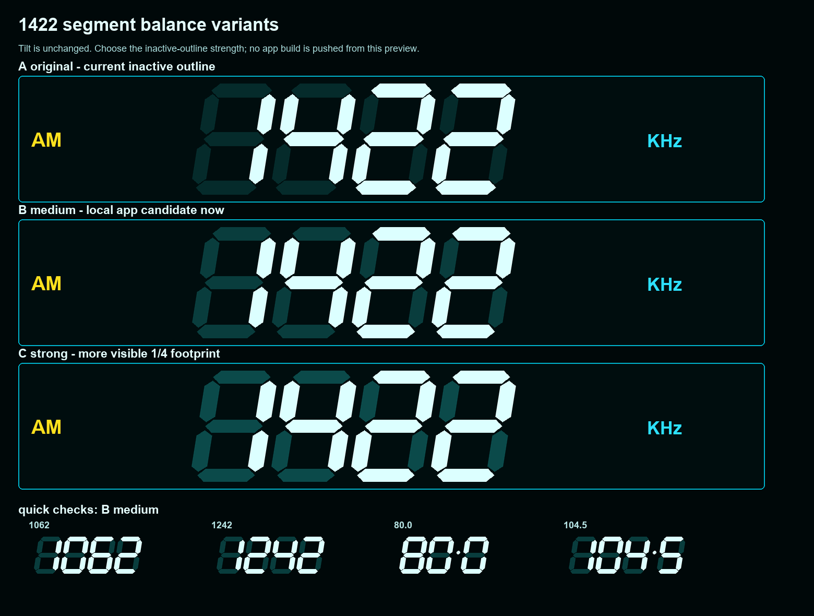

Segment Choice
1422 표시에서 14가 작아 보이는 문제를 비교하는 승인용 페이지입니다. 숫자 그룹 기울기는 기존 그대로 유지했습니다.
이 페이지는 프리뷰 전용입니다. 사용자 승인 전까지 앱 빌드/설치 링크에 반영하지 않습니다.

A원본 유지. 변화 없음.
B중간 보정. 현재 로컬 앱 후보.
C강한 보정. 14 윤곽이 더 살아남.
1422 표시에서 14가 작아 보이는 문제를 비교하는 승인용 페이지입니다. 숫자 그룹 기울기는 기존 그대로 유지했습니다.
